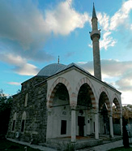
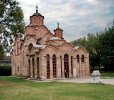
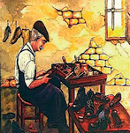
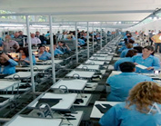
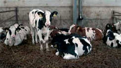
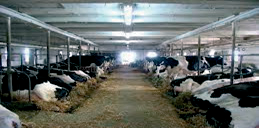
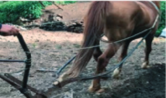
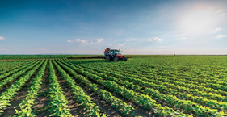

Ndryshimi i objekteve dhe i mjeteve të punës gjatë kohës


Njerëzit kanë besime dhe bindje të ndryshme, që do të thotë se ekzistojnë edhe fe të ndryshme nëpër botë. Shumica e feve kanë edhe objektet e tyre të posaçme për praktikat e besimtarëve që u përkasin atyre feve. Edhe këto objekte fetare kanë arkitekturën e tyre të veçantë, e cila, po ashtu, ka ndryshuar përgjatë historisë, por është ruajtur në formën e përgjithshme (shih fotografitë lart).


Zejtarët dikur punonin në punishte të vogla me mjete pune të thjeshta. Sot ka fabrika të mëdha moderne, me teknologji bashkëkohore, me numër të madh punëtorësh, që karakterizohen nga cilësia e lartë e prodhimeve.


Blegtoria është mjaft e zhvilluar në vendin tonë. Dikur stallat ishin të thjeshta dhe mbaheshin pak kafshë. Njerëzit gjithmonë janë marrë me rritjen e kafshëve dhe kanë punuar në kushte të vështira. Me zhvillimin e teknologjisë, nga stallat e thjeshta u ndërtuan fermat moderne, të cilat kanë kushte të mira dhe të përshtatshme për mbajtjen e kafshëve.


Kosova ka shumë toka pjellore dhe bujqësia ka qenë e zhvilluar në të gjitha kohët. Dikur punohej me mjete primitive (me kalë me parmendë, siç shihet në fotografi), ndërsa sot toka punohet me traktorë, kombajna etj. Kjo njihet si bujqësi moderne dhe prodhimet janë shumë më të mëdha.